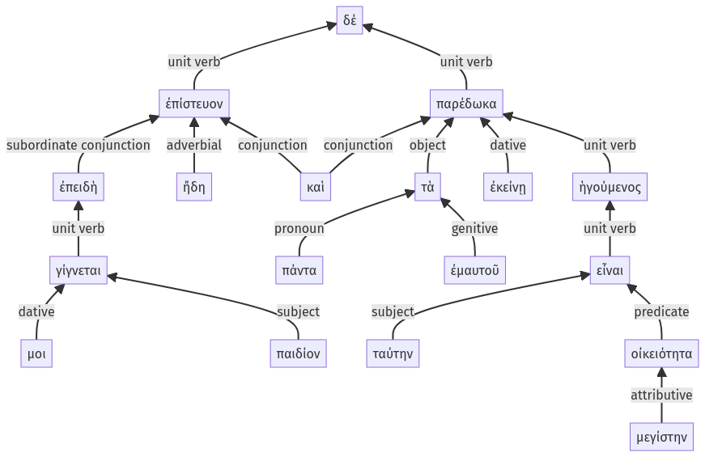

Lysias, Oration 1, 1.6.47-1.6.64a
1.6.1-1.6.46a | 1.6.65-1.7.5a
Sentence 11
1.6.47-1.6.64a
ἐπειδὴ δέ μοι παιδίον γίγνεται, ἐπίστευον ἤδη καὶ πάντα τὰ ἐμαυτοῦ ἐκείνῃ παρέδωκα, ἡγούμενος ταύτην οἰκειότητα μεγίστην εἶναι:
2 ἐπειδὴ μοι παιδίον γίγνεται
1 ἐπίστευον ἤδη
1 καὶ πάντα τὰ ἐμαυτοῦ ἐκείνῃ παρέδωκα
2 ἡγούμενος
3 ταύτην οἰκειότητα μεγίστην εἶναι
ἐπειδὴ δέ μοι παιδίον γίγνεται, ἐπίστευον ἤδη καὶ πάντα τὰ ἐμαυτοῦ ἐκείνῃ παρέδωκα, ἡγούμενος ταύτην οἰκειότητα μεγίστην εἶναι:
Highlighting:
- connecting words
- unit verb
- subject
- object
Color code:
- independent clause (level 1, transitive verb)
- subordinate clause (level 2, linking verb)
- independent clause (level 1, transitive verb)
- circumstantial participle (level 2, transitive verb)
- indirect statement with infinitive (level 3, linking verb)
